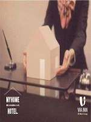
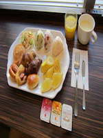
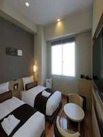
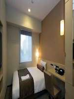

เดิน 3 นาทีจากสถานี Sanchome! คือการเข้าถึงที่สะดวกไปยังทุกส่วนในรถไฟใต้ดิน! เดิน 3 นาทีจากสถานีรถไฟกว่า Sanchome C7 · E2 ออก ฉันไม่คิดว่าเดิน 9 นาทีจาก JR สถานีชินจูกุ (ทางออกตะวันออก), มันเป็นสถานที่ที่เงียบสงบที่เต็มไปด้วยสีเขียวใกล้แห่งชาติ Shinjuku Gyoen การ์เด้น, ศาลเจ้า Hanazono ฯลฯ ◆กรุณาใช้ยังอาหารเช้าฟรีแสงตอนเช้าที่ขนมปังอบและอื่น ๆ ! ◆
   